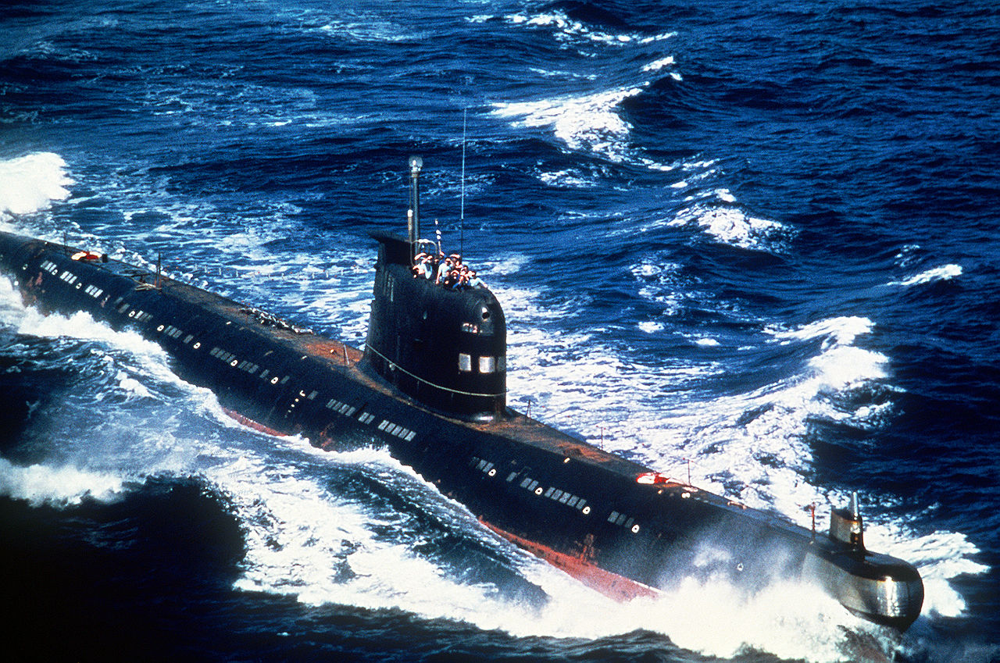
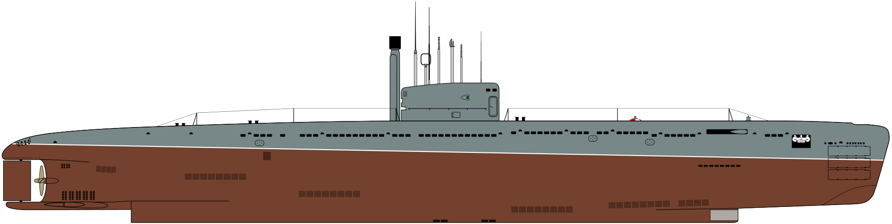

Потаённое судно Никонова
В России попытки построить подводную лодку предпринимались при Петре Великом: крестьянином-самоучкой Ефимом Никоновым в Петербурге на галерном дворе в присутствии Петра I была испытана действующая модель подводной лодки. Изобретение также предлагалось дополнить водолазным костюмом из кожи. Предполагалась возможность выхода людей в подобных костюмах для разрушения днища неприятельского корабля. Проект костюма содержал в себе основные элементы современного водолазного снаряжения. Его шлем представлял собой прочный деревянный бочонок со смотровым окошком против глаз. Скважины и отверстия должны быть «убиты» свинцом, к спине должен быть прикреплен груз со свинцом или песком. К проекту также прилагалась опись особых инструментов для работ «по провертке» и «зажиганию» кораблей.
В 1720—1721 годах по указанию Петра I построил сперва модель, а затем, в 1721—1724 годах и полноразмерное подводное «Потаённое судно», ставшее первой российской подводной лодкой. Но со смертью царя проект «потаённого огненного судна большого корпуса» не был доведён до конца.
Подводная лодка Двежецкого
В 1878 году в Одессе была испытана первая в России подводная лодка конструкции инженера Джевецкого. Лодка длиной около 5 метров приводилась в движение гребным винтом, вращение которого осуществлялось посредством ножного привода, по типу велосипедного. Испытывалась в 1878 году на Одесском рейде в течение 5 месяцев. Джевецкий смог прикрепить мину к стоящей на якоре барже и взорвать её. Вторую подлодку Джевецкого построили в 1879 году на Невском заводе в Санкт-Петербурге. Эта подлодка была рассчитана на четырёх человек, у неё было два гребных винта — по одному спереди и сзади. Обшивка была сделана из 5-миллиметровых листов. Винты были поворотными и их использовали как рули, задний винт двигался в горизонтальной плоскости, передний — в вертикальной.

Дизель-электрические(до 1917 года)
"Дельфин"
Подводная лодка «Дельфин» (миноносец №150) — первая российская подводная лодка из официально зачисленных в списки кораблей Российского флота. В 1903—1904 годах «Дельфин» достраивался и проходил испытания на Балтике, служил для подготовки первых русских подводников. Впоследствии корабль послужил основой для последующих типов русских подводных лодок. В конце 1904 года был перевезён по железной дороге во Владивосток. За время Русско-японской войны 17 дней провёл в море, в том числе совершил боевой поход продолжительностью 8 суток. В июне 1916 года перевезён в Мурманск, в августе 1917 года исключён из списков кораблей, в 1920-х годах корпус «Дельфина» был разделан на металл.
Касатка
Подводные лодки типа «Касатка» — серия российских подводных лодок, построенных в 1904—1905 годах по проекту И. Г. Бубнова. 1 сентября 1903 года Морское министерство выдало И. Г. Бубнову 3 000 рублей и разрешение на создание проекта подводного миноносца № 140, ставшего развитием подводной лодки «Дельфин». Техническое задание предусматривало надводную скорость в 14 узлов, увеличение водоизмещения и усиление вооружения. 2 января 1904 года Балтийскому заводу был отдан заказ на строительство по предоставленному проекту головной лодки «Касатка». 24 февраля 1904 года были дозаказаны ещё 4 лодки. Лодки принимали активное участие в войне с Японией, в Первой мировой войне, в Гражданской войне.
Акула(1909)
«Аку́ла» — российская средняя подводная лодка, построенная на верфи в Кронштадте в 1906—1910 годах по проекту, разработанному в 1905 году И. Г. Бубновым и являвшемуся развитием проекта «Касатка». После Русско-Японской войны Главный морской штаб принял решение о необходимости создания двух типов подводных лодок: водоизмещением 100—150 тонн для патрулирования берега. Во время Первой мировой войны «Акула» совершила 16 боевых походов, участвовала в постановке минных заграждений, первой из российских лодок применила тактику поиска цели в море вместо ожидания цели на фиксированной позиции. 15 ноября 1915 года во время 17-го похода с целью минной постановки у Мемеля лодка погибла. Предполагалось, что лодка погибла во время шторма, потеряв остойчивость из-за расположенных на палубе мин. По результатам экспедиции к остову лодки 29 июня 2014 года установлена истинная причина гибели лодки: подрыв носом на дрейфующей мине во время перехода в надводном положении.
Краб
«Краб» — российская подводная лодка, построенная в 1912 году, первый в мире подводный минный заградитель, спроектированный Михаилом Петровичем Налётовым. В 1906 году Михаил Налётов представил Морскому техническому комитету проект подводного минного заградителя водоизмещением около 300 тонн. В 1908 году Морское министерство выдало заводу «Наваль» заказ на строительство подводного минного заградителя. Лодка могла принимать на борт до 60 якорных мин и 4 торпед. За время службы «Краб» успел сделать три подводных минирования. В 1918 году «Краб» попал в руки германского, а затем морского командования Антанты. В апреле 1919 года подводный заградитель затопили в Северной бухте Севастополя.
СССР(Дизель)
Подводные лодки серии I «Декабрист»
Подводные лодки серии I типа «Декабрист» — серия советских больших торпедных дизель-электрических подводных лодок, построенных в 1927—1931 годах. Серия I стала первым типом подводных лодок, разработанных для советского флота после Октябрьской революции. Их создание было утверждено в морской программе 1926 года. 5 марта 1927 года состоялась закладка трех первых кораблей на Балтийском заводе в Ленинграде, а 14 апреля 1927 года были заложены и три лодки в Николаеве. «Декабристы» стали первыми подводными лодками Северного флота, успешно освоив этот регион с суровыми климатическими условиями. В ходе средних ремонтов лодки получили новые рубки, орудие Б-2 заменялось на более совершенное Б-24. К началу войны Д-1 погибла, а Д-6 находилась в капитальном ремонте, однако остальные 4 корабля приняли активное участие в Великой Отечественной войне. Одна из лодок данного класса, Д-2 «Народоволец», сохранена в качестве музейного корабля и установлена в Санкт-Петербурге.
Подводные лодки типа «Ленинец»
Подводные лодки типа «Ленинец» — тип советских дизель-электрических подводных лодок-минных заградителей времён Второй мировой войны. Всего было построено 25 лодок типа «Л» по четырём различным проектам (серии II, XI, XIII и XIII-бис), из них 19 — до 1941 года. Подводные лодки типа «Ленинец» входили в состав всех четырёх флотов Советского Союза и приняли активное участие в Великой Отечественной войне. Многие корабли имели собственные имена.В конструктивном плане новая подводная лодка была близка к подводным лодкам серии I «Декабрист», являясь более технологичным развитием этого проекта.Прочный корпус был разделён на 6 отсеков. Одна переборка была плоской и рассчитанной на давление в 1 атм., остальные 4 переборки имели сферическую форму и рассчитывались на 6 атм. Форма дверей была изменена на овальную, тогда как ранее применялись двери круглой формы.
Подводные лодки типа «Щука»
Подводные лодки типа «Щука» — серия средних подводных лодок, построенных в СССР в 1930—1940-x годах. Самый многочисленный тип средних подводных лодок СССР Великой Отечественной войны. Отличительными особенностями лодок были сравнительная дешевизна в постройке, повышенные манёвренность и живучесть. «Щуки» активно участвовали в Великой Отечественной войне, из 44 воевавших лодок погибла 31. Подводные лодки типа «Щ» совокупно потопили 27 транспортов и танкеров.На боевом счету подлодок типа «Щ» 35% потопленного и повреждённого тоннажа противника.Всего было построено 86 лодок всех серий.
Подводные лодки типа «Средняя»
Подводные лодки типа С, «Средняя» — общее наименование для советских подводных лодок серий IX, IX-бис и XVI, построенных в 1936—1948 годах на базе проекта, разработанного по заказу советской стороны немецко-голландским конструкторским бюро IvS. Всего в строй вступила 41 субмарина. 30 участвовавших в Великой Отечественной войне подводных лодок типа «С» по подтверждённым обеими воюющими сторонами данным потопили 19 судов общим тоннажем 78 942 брт, 7 боевых кораблей, в том числе одну подводную лодку, повредили 6 транспортов (27 192 брт) и 6 боевых кораблей противника. Было потеряно 15 субмарин этого типа, в том числе все три лодки серии IX.Лодки типа «С» относились к полуторакорпусному типу смешанной клёпано-сварной конструкции. Лёгкий корпус выполнялся сварным и простирался почти на всю длину лодки. Прочный корпус изготавливался на заклёпках.
Основные представители после Вов
Подво́дные ло́дки прое́кта 613
Подво́дные ло́дки прое́кта 613 — серия советских средних дизель-электрических подводных лодок, построенных в 1951—1957 годах. Серия стала самой массовой в советском подводном флоте: было построено 215 подводных лодок. 43 лодки впоследствии были переданы различным странам, ещё 21 лодка была построена в Китае по советским чертежам и с использованием советских комплектующих. Проект 613 имеет двухкорпусную конструкцию. Цельносварной прочный корпус с внутренним размещением шпангоутов разделяется водонепроницаемыми переборками на 7 отсеков. Погружение лодки осуществлялось приёмом воды в 10 цистерн главного балласта, размещённых в лёгком корпусе. С целью упрощения конструкции и снижения стоимости кингстоны имелись только в цистернах № 4 и № 5.
Подводные лодки проекта 641
Подводные лодки проекта 641 — серия советских дизель-электрических подводных лодок (ДЭПЛ). Проект был признан удачным. Было построено 75 кораблей, в том числе 17 на экспорт в военно-морские силы Польши, Индии, Ливии и Кубы. Для замены первых послевоенных океанских лодок в конце 1950-х годов в ЦКБ-18 разработан новый проект, получивший обозначение 641. Лодка разделялась переборками на 7 отсеков. При проектировании обводов корпуса большое значение придавали мореходности в надводном положении, что обусловило наличие заострённого форштевня и седловатость в срединной части.
C-99
С-99 — средняя подводная лодка, построенная в СССР в 1951—1958 годах по проекту 617, единственная советская субмарина, на которой классическая дизель-электрическая схема была дополнена ПГТУ (парогазотурбинной установкой) для подводного хода со скоростями от 10 до 20 узлов.Корпус лодки создавался максимально обтекаемым для улучшения ходовых качеств. Обводы кормовой части спроектированы аналогично немецкому проекту XXVI, количество выступающих частей было минимизировано. Лодка имела двухкорпусную конструкцию, запас плавучести составлял 28 %. С учётом разделения прочного корпуса на 6 отсеков была обеспечена плавучесть лодки при затоплении любого отсека прочного корпуса.
Подводные лодки проекта 627 (627А) «Кит»
Подводные лодки проекта 627 (627А) «Кит» — первые советские атомные подводные лодки. Фактически, только головной корабль, К-3 «Ленинский Комсомол», относился к проекту 627, а все последующие строились по изменённому проекту 627А. Проектировало и строило эти корабли СКБ-143.В результате создания атомных подводных лодок проекта 627 СССР стал второй в мире державой, имеющей атомный подводный флот. Корабли проекта 627—627А имели выдающиеся для своего времени характеристики, но обладали и существенными недостатками, которые исправлялись в последующих проектах. Всего, с 1957 по 1963 годы, в строй вступили 13 субмарин, проходивших службу на Северном и Тихоокеанском флотах. Одна субмарина, К-8 — погибла, остальные были списаны в начале 1990 годов.
Подводные лодки проекта 705(К) «Лира»
Подводные лодки проектов 705, 705К «Лира», по классификации НАТО — «Alfa» — серия советских атомных подводных лодок. Небольшие высокоскоростные одновальные лодки с титановым корпусом не имели аналогов по скорости и манёвренности и были предназначены для уничтожения субмарин противника. Трудности в техобслуживании этих субмарин и сокращение финансирования в связи с началом Перестройки привели к окончанию карьеры этих кораблей.Все лодки проекта были выведены из состава флота в 1990 году, кроме К-123, проходившей капремонт до 1992 года, которая была исключена из списка кораблей только в 1997 году.

Подводные лодки проекта 670 «Скат»
Подводные лодки проекта 670 «Скат» — серия советских атомных подводных лодок, построенных в 1960-х — 1970-х годах.Разработка горьковского ЦКБ-112 («Красное Сормово»), главный конструктор — В. П. Воробьев.Сравнительно дешёвые и небольшого водоизмещения, вооружённые ПКР П-70 «Аметист», лодки типа «Скат» предназначались для уничтожения кораблей, идущих в составе конвоев, в основном — авианосцев в составе авианосных ударных групп.
Подводные лодки проекта 885 «Ясень»
Подводные лодки проекта 885 «Ясень» — серия российских многоцелевых атомных подводных лодок с крылатыми ракетами (ПЛАРК) четвёртого поколения. АПЛ проекта 885 «Ясень» станут, согласно планам модернизации российского подводного флота, одним из четырёх типов подводных лодок, принятых на вооружение к 2023 году. Головной корабль базового проекта 885 «Ясень» — «Северодвинск» — в 2014 г. вошёл в состав Северного флота ВС России; следующие корабли серии строятся по модернизированному проекту 885М «Ясень-М».Лодка имеет полуторакорпусную конструкцию с лёгким корпусом только в носу и с надстройкой в районе ракетных шахт. Материал корпуса маломагнитная сталь. На корпус нанесено резиновое покрытие, снижающее шумность лодки, а также уменьшающее отражение сигналов гидролокаторов.
Подводные лодки проекта 955 «Борей»
Подводные лодки проекта 955 «Борей» — серия российских атомных подводных лодок класса ракетный подводный крейсер стратегического назначения (РПКСН) четвёртого поколения. По данным на апрель 2019 года — 3 корабля базового проекта 955 «Борей» находятся в строю, 1 корабль модернизированного проекта 955А «Борей-А» проходит испытания, еще 4 корабля проекта 955А «Борей-А» строятся. Основное вооружение — 16 БРПЛ Р-30 «Булава». «Бореи» являются первыми российскими АПЛ, где движение осуществляется с помощью одновального водометного движителя с высокими пропульсивными характеристиками.